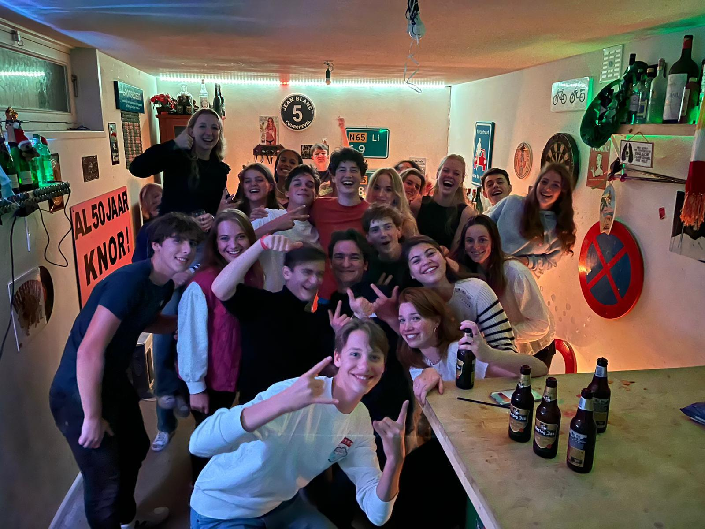

Mijn volledige naam is Stijn Johannes Cristiaan Antonissen. Ik ben geboren op 24 november 2005 en ben dus momenteel 16 jaar oud. Mijn hobby's zijn sporten, programmeren, gamen, karten en chillen met vrienden. Het zal je dus ook niet verbazen dat ik de Software Development opleidng doe
op hetSintlucas. Ik hoop dat ik na deze opleiding aan de slag kan met het maken van websites zoals dit en games. Later wil ik graag een eigen bedrijf waarbij bedrijven mij kunnen inhuren voor opdrachten voor games, websites of programma's. Ik vind het ook leuk om naar het buitenland te gaan. Voor Corona gingen we regelmatig op vakantie om bijvoorbeeld te skieen in Oostenrijk. Ook gingen we elk jaar naar Egypte om lekker te relaxen aan het strand en te snorkelen.
In mijn vrije tijd vind ik het heel leuk om te programmeren, gamen, sporten en karten. In de zomervakantie zijn we begonnen met het maken van een kartbaan in een weiland van een vriend van mij. Ik heb hiervoor ook mijn eigen kart gekocht, waar ik behoorlijk veel gebruik van maak. Naast het bouwen van de kartbaan en het karten zelf, vind ik het ook leuk om tijd te spenderen met vrienden.

Ik kan mij nog goed herinneren dat ik op 10 jarige leeftijd in de zomervakantie samen met me vader en zusje ging karten in Tilburg. Sindsdien ben ik mijn interesse in karten nooit verloren. Afgelopen zomervakantie kwam een vriend op het geweldige idee om een off-road kartbaan te bouwen in een weiland van een vriend van mij.
Ik begeon tijdens de corona pandemie uit verveling met het maken van een eigen Roblox game. Hierdoor ben ik in aanraaking gekomen met coderen. Afgelopen jaar ben ik ook begonnen met websites maken en daarin probeer ik mij ook met behulp van deze opleiding op door te ontwikkelen.
Ik vind het heel gezzelig om elk weekend dingen te doen met vrienden. Over het algemeen spreek ik elk weekend af om wat te doen met vrienden. De ene keer gaan we naar de stad of naar een pretpark, maar we gaan ook vaak gewoon bij vrienden een avondje chillen.
Ik begon op mijn 3e levensjaar op de oranje nassau school in Geldermalsen. Op mijn 7e levensjaar verhuisde ik met mijn gezin naar Haaren een klein dorpje in Noord-Brabant. Hierdoor moest ik ook van school veranderden en ik ging toen naar de Klim-Op in Haaren. Toen ik 12 was ging ik naar de middelbare school. Ik von de keuze voor een middelbare school, maar na lang denken had ik uiteindelijk gekozen voor het Maurick College in Vught. Ik maakte mijn start op het Maurick in 1 havo/vwo. In 2 havo/vwo moest ik besluiten of ik HAVO of VWO wilde gaan doen. Ik koos dat jaar voor VWO terwijl ik maar net over ging. Helaas ben ik door deze keuze in 3 VWO blijven zitten en besloot ik naar 3 HAVO te gaan. Dit ging mij een stuk gemakkelijker af gelukkig.Ttoch besloot ik dat jaar dat ik liever een opleiding ging doen, dan nog 2 jaar door te gaan op het Maurick. Ik was naast school altijd alleen maar bezig met het programmerenen en visualiseren van games. Dit deed ik voornamelijk in roblox, maar ook met het maken van websites. Na een tijdje zoeken kwam ik op SintLucas uit. Ik ben hier toen naar meerdere opendagen geweest en kreeg een goede indruk. Ik besloot daarom om in het schooljaar van 2022/2023 aan de opleiding Software Development deel te nemen op het SintLucas in Eindhoven. Tot nu toe lijkt dit een hele goede keuze te zijn geweest. Ik voel me veel relaxter en heb het gezellig in mijn 2 klassen. Wel moet ik soms even schakelen met de manier van werken, maar dat zal vast snel wennen.
Ik zie de mijn toekomst voor me als software developer. Ik hoop dat ik later mijn eigen bedrijf kan oprichten omtrent software development, waarin bedrijven mij kunnen inhuren om bepaalde dingen te maken zoals websites, game functies of programma's. Ook hoop ik later vanuit huis te kunnen werken en uiteraad financieel onafhankelijk te zijn. Ik vind het niet belangerijk om veel geld te hebben, maar ik vind het belangerijk om te kunnen doen in het leven wat ik wil. Ook wil ik mijn familie en vrienden gewoon een keer mee kunnen nemen op vakantie of naar een restaurant zonder dat ik daar overna hoef te denken. Ik zie mijn toekosmt voor me in spanje in een villa, die niet al te groot is maar precies genoeg ruimte heeft om er welvarend in te kunnen leven.